Enter a task
On Home, type a small real-life task into the reminder field.
Official Player Guide
Neuro Venture turns real-life tasks into quests. Complete them to earn XP, collect Gold, strengthen your habits, and customize your hero.
New Player Tutorial
On Home, type a small real-life task into the reminder field.
Tap the plus button to add a quick task, or the calendar button for more options.
Tap Start Quest. Your new task is ready to complete.
Adventurer Tip: Start with one quest that feels easy to finish. A quick win is still a win.
Quest Log
Your tasks become quests. Add them quickly from Home or open the reminder screen to choose difficulty, scheduling, notes, and notifications.
Difficulty controls the base reward for a completed quest. Choose the level that matches the effort—not how important the task looks to someone else.
Free Adventurer Limit: Free users can have up to 8 active tasks at a time. This is your task capacity—not the daily reward limit. Home quick tasks use the app's default reward behavior. Open the full reminder screen when you want to select a difficulty.
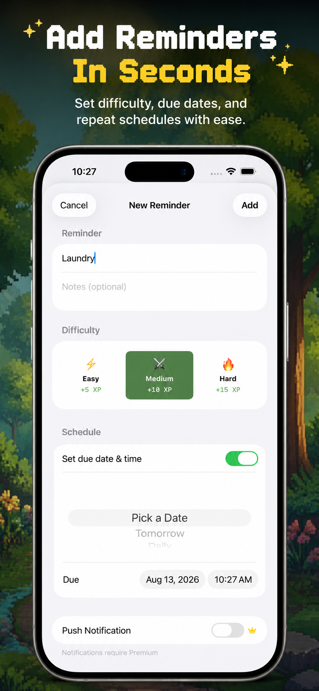
Use the calendar button on Home when a quest belongs at a specific time.
Scheduled quests appear in the Quests tab so you can see what is due today, tomorrow, and beyond.
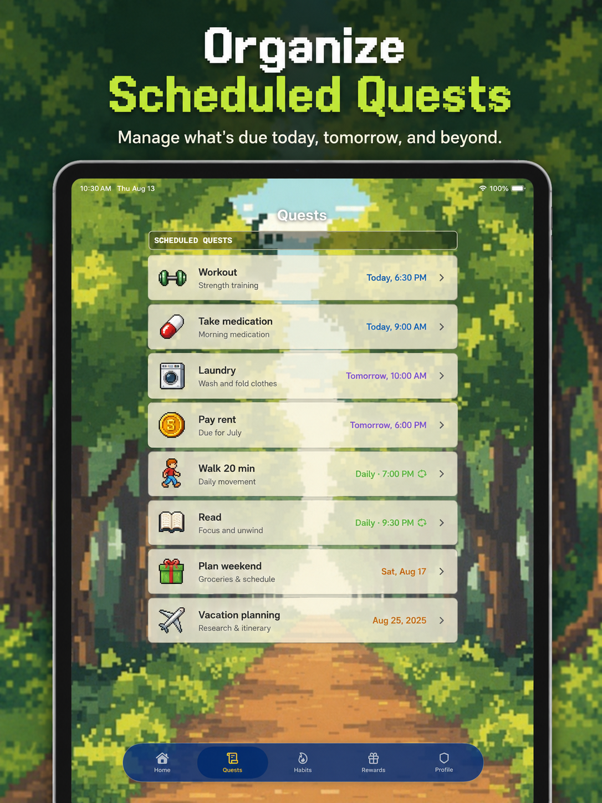
Tutorial Expansion Pending
The app is still preparing the full field guide for Start Timer, Snooze, Complete, focus sessions, Live Activities, and Dynamic Island. These controls will be documented after the feature and device screenshots are ready.
Daily Training
The Habits tab shows today's active quests, your Daily XP Progress, and an archive of completed work.
The bar shows how close your hero is to today's progression cap.
Tap the circle beside a daily quest when you finish it.
Completed quests are grouped by month so your progress is never lost.
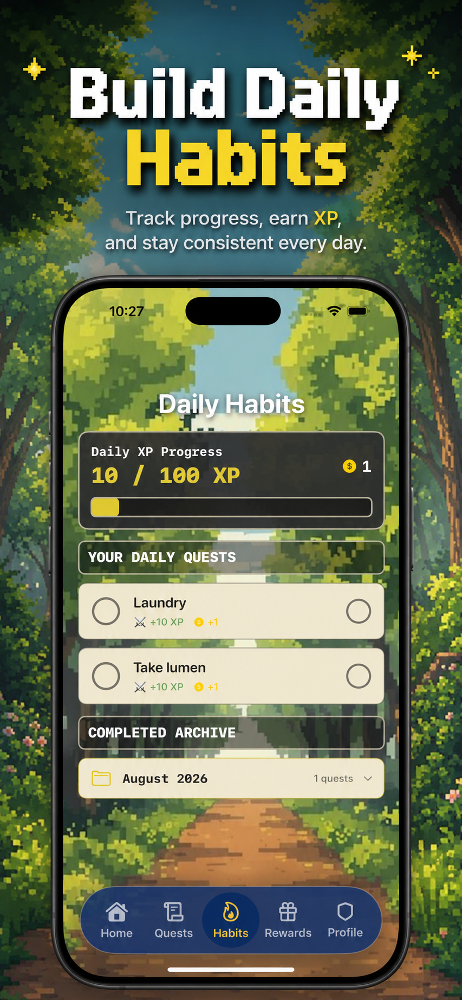
Adventure Currency
XP records your progress and helps your adventurer grow. Complete quests and habits to fill the Daily XP bar.
Gold is your reward currency. Save it and spend it on available outfits, skins, and other rewards.
Remember: Difficulty sets the base reward. Premium status may change the amount shown in the app.
Permanent Upgrade
One-time purchase. No subscription.
Unlock unlimited tasks, notifications and reminders, focus timers, special premium armor, and exclusive familiars.
Free Adventurer: Free users can keep up to 8 active tasks at a time.
Stamina Warning
Daily Reward Limit Reached
Neuro Venture rewards the first 10 tasks you complete each day. After the 10th rewarded completion, your hero becomes exhausted and additional XP and Gold rewards pause until the next day.
You can still complete tasks while your hero is exhausted. This limit keeps progression balanced and prevents unlimited reward farming. The existing 100 XP daily cap remains part of your Daily XP progress.
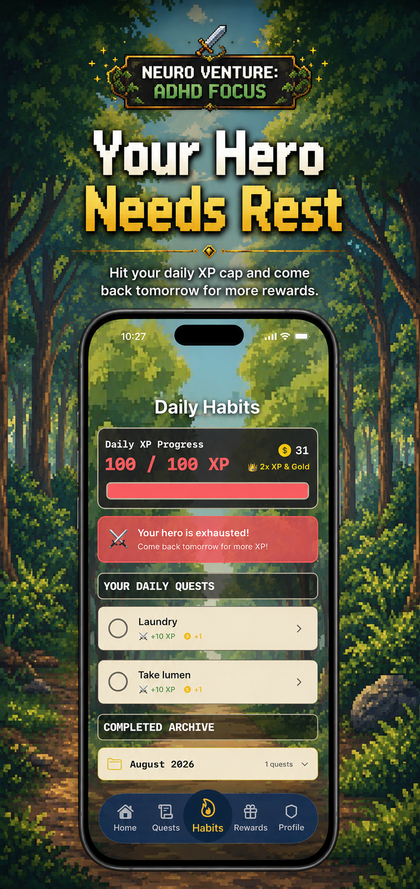
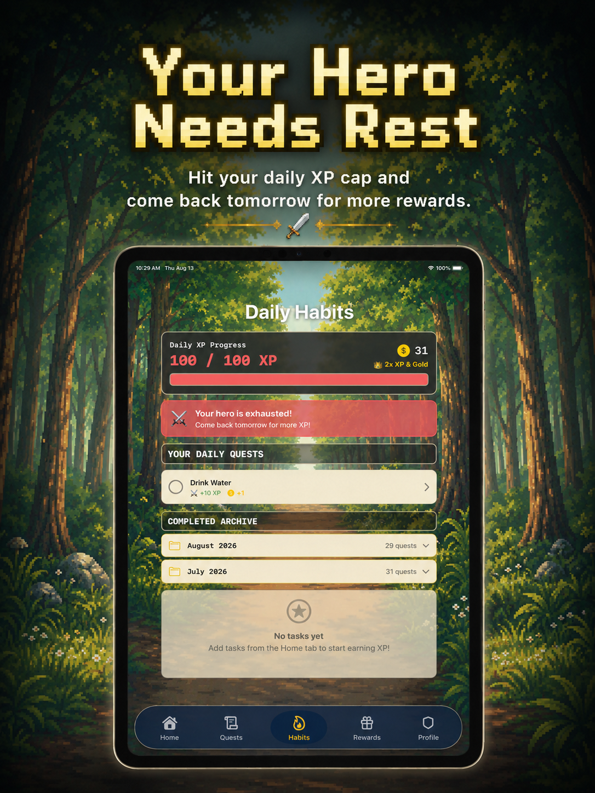
Adventurer Tip: Completing more tasks is still useful after your hero is exhausted. You can keep checking off tasks, but XP and Gold rewards resume the next day.
Treasure Vault
Visit Rewards to see what your adventurer can unlock. Available rewards may include outfits, character skins, pets or familiars, and other journey upgrades.
Your current balance appears near the top of the Rewards screen.
Each reward card shows its Gold cost.
If you have enough Gold, the reward joins your collection.
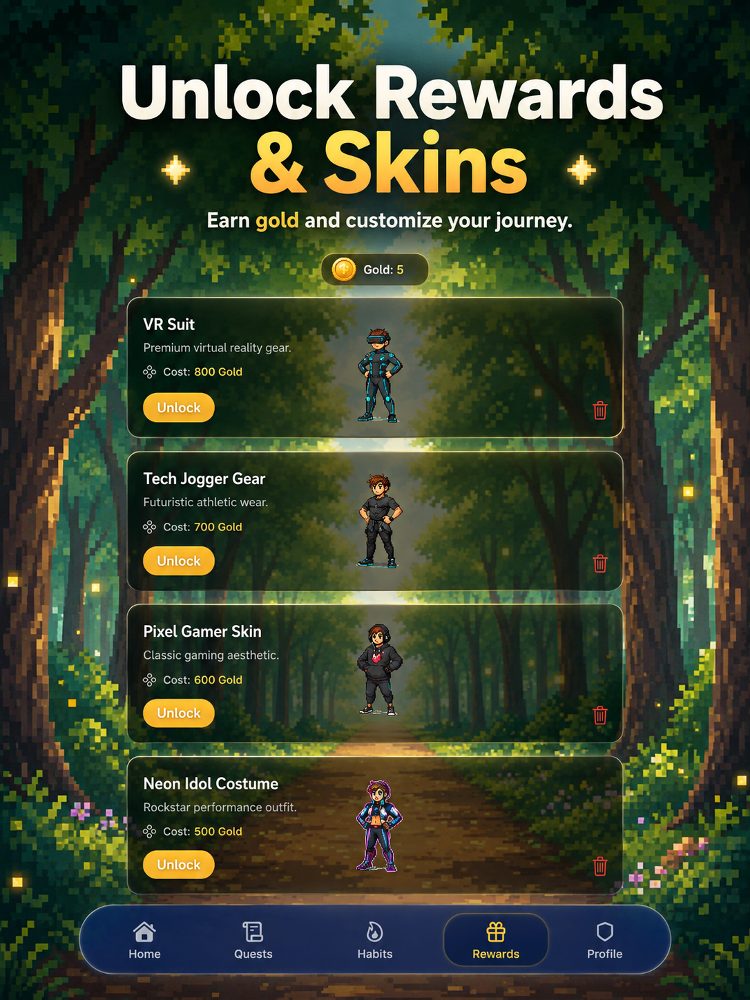
Platform Field Guides
Each guide uses screenshots from that device only, so every instruction matches the layout in your hands.
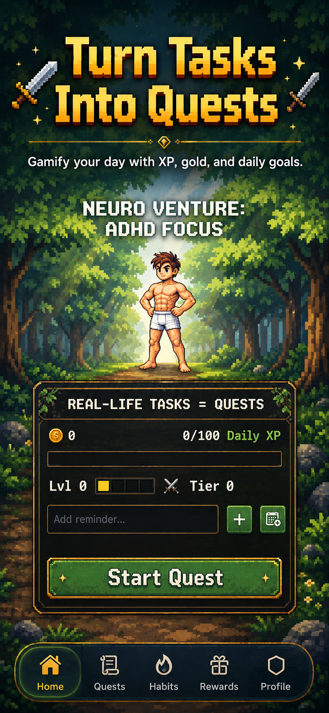
Enter a quick task, tap the plus button, then select Start Quest. The Home panel also shows your Gold, Daily XP, level, and tier.
Use the full reminder screen for notes, difficulty, a due date and time, a repeating schedule, and available notification options.
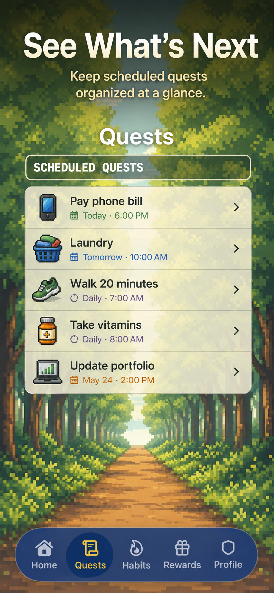
Open Quests to see what is coming next. Dates, times, and repeat schedules appear below each quest.
Complete today's habits, watch Daily XP rise, and open the monthly archive when you want to review past victories.
After your 10th rewarded task completion of the day, the exhaustion warning appears. You can keep completing tasks, but XP and Gold rewards resume the next day.
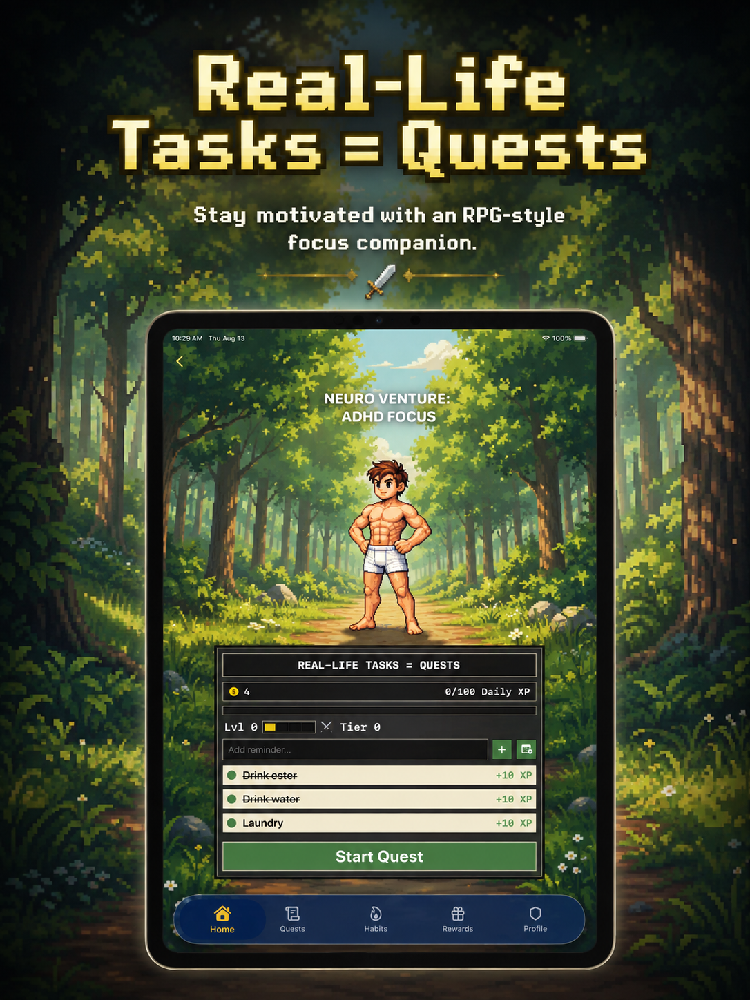
Choose your task, add it to the panel, and start the quest from the spacious iPad Home layout.
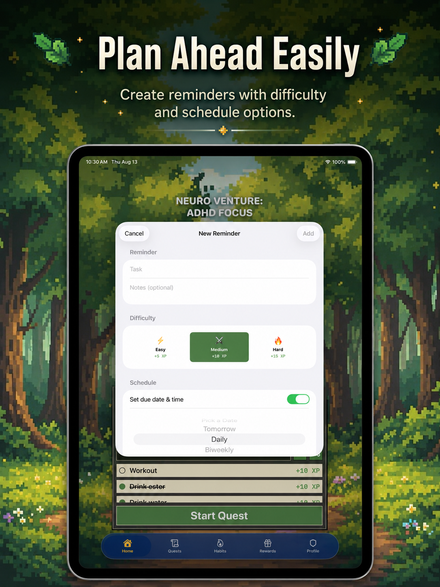
Add details, choose a difficulty, and set a schedule using the iPad reminder sheet.
The wider quest log keeps names, notes, and due times visible at a glance.
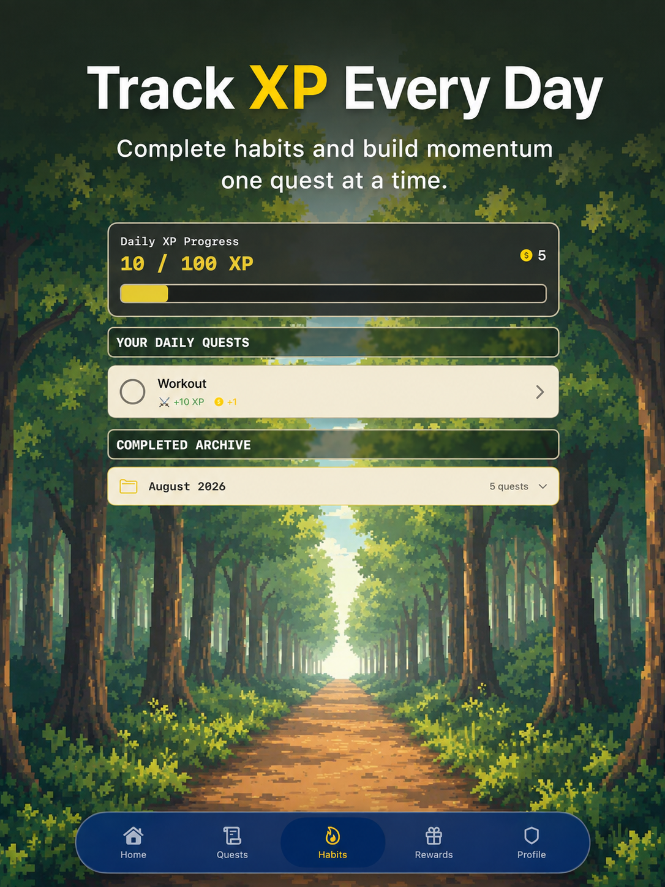
Use Daily XP Progress to follow momentum, complete habits, and review the completed archive.
The iPad shows the same exhaustion status after 10 rewarded completions. You can keep completing tasks, while XP and Gold rewards return the next day.
Compare reward costs, choose your next goal, and spend saved Gold when you are ready.
Wisdom from the Trail
“Put one shirt away” is a valid quest. Small steps build momentum.
Pick difficulty based on how the task feels for you today.
Give alerts only to quests that truly need a time, so important reminders stand out.
The goal is steady progress—not a perfect quest log every day.
Help from the Guild
Your hero may already have earned rewards from 10 completed tasks today. After the 10th rewarded completion, XP and Gold pause until the next day, but you can still complete tasks.
Your hero earns rewards from up to 10 completed tasks per day. After the 10th rewarded completion, exhaustion begins to keep progression balanced. This is separate from the Free plan capacity of 8 active tasks.
Free users can have up to 8 active tasks at one time. This is a capacity limit. Hero Exhaustion is different: it begins after 10 rewarded task completions in a day.
Open the full Add Reminder screen and choose Easy, Medium, or Hard before adding the quest.
Tap the calendar button on Home, turn on Set due date & time, then select the date, time, and optional repeat schedule.
Allow notifications in iOS Settings and enable the notification option when scheduling an eligible quest. Notification features may require Premium.
This tutorial is pending until the notification-action experience is finalized and documented with working screenshots.
The Focus Timer tutorial is coming in a future Manual update after the finished experience and screenshots are ready.
Dynamic Island and Live Activity support are not currently documented as available. This guide will be updated only after those features are finished.
Support Camp
Have a question, an idea, or a problem with your adventure? Send a message from your preferred mail app.